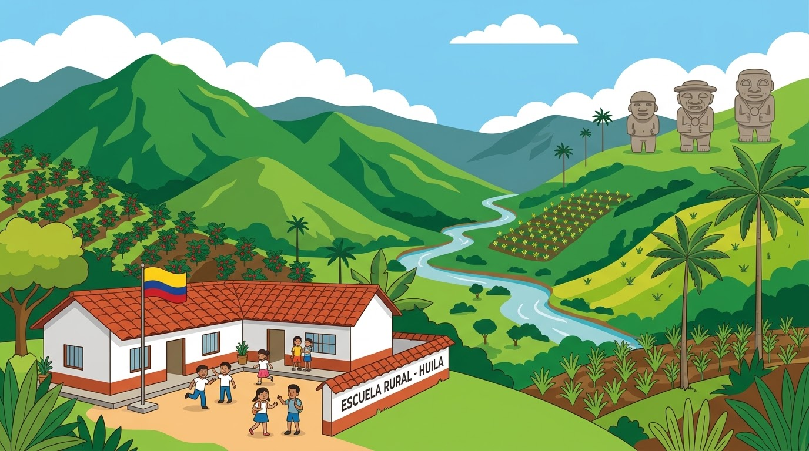
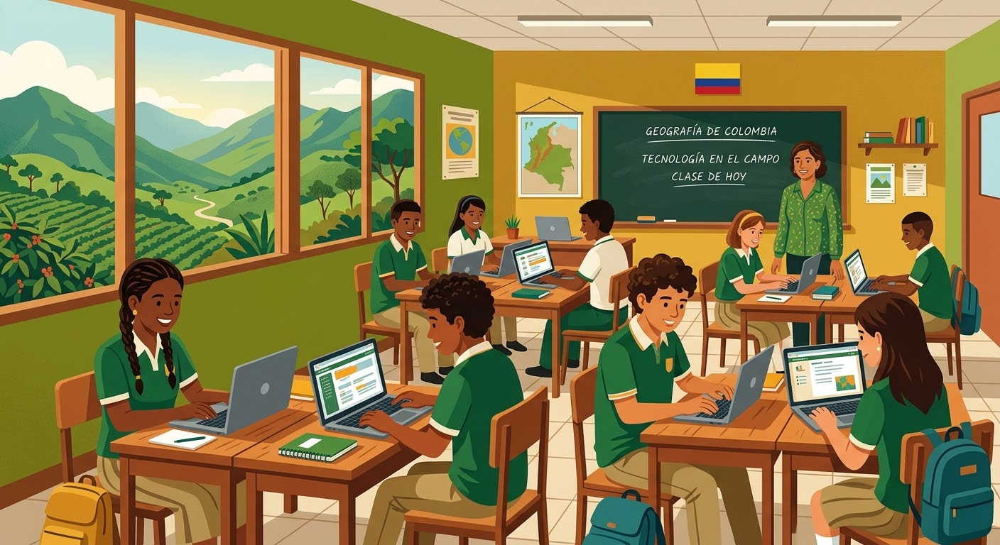
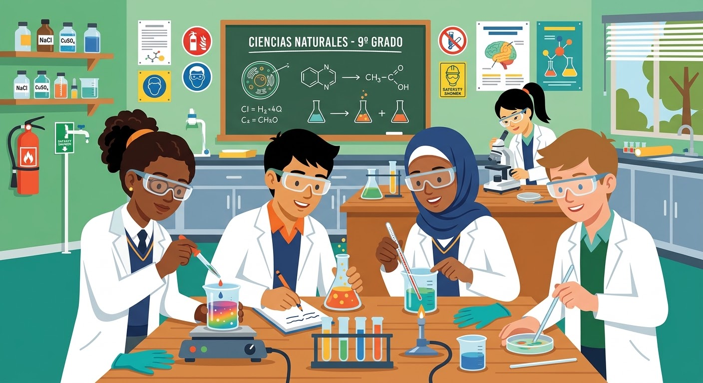
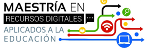

Avatar 1 · El trabajo de grado
Video
Universidad de Cartagena
Maestría en Recursos Digitales Aplicados a la Educación
Portafolio de nuestro trabajo de grado con los estudiantes de grado noveno de la Institución Educativa Municipal Misael Pastrana Borrero, en Saladoblanco (Huila).

Fortalecimiento del rendimiento académico en Ciencias Naturales mediante una estrategia pedagógica mediada por Google Classroom en estudiantes de grado noveno de la Institución Educativa Municipal Misael Pastrana Borrero en Saladoblanco, Huila
Facultad de Ciencias Sociales y Educación · Maestría en Recursos Digitales Aplicados a la Educación · Universidad de Cartagena · Proyecto de Aula I
¡Hola! Recorre el portafolio en orden, como un camino de cuatro paradas. En cada página encontrarás arriba en qué parada vas y, al final, el botón para seguir a la siguiente.



Saladoblanco, Huila, Colombia · 8 de junio de 2026
Dos avatares en video presentan el trabajo de grado y el problema de investigación.
Justificación, metodología y objetivos del trabajo de grado en una sola vista.
Innovación educativa para el fortalecimiento del rendimiento académico en la educación básica.
El bajo rendimiento resulta de la interacción entre metodologías tradicionales, motivación y contexto escolar.
Aprendizaje significativo (Ausubel et al., 1983) y mediado socialmente (Vygotsky, 1978), con indagación científica (National Research Council, 2012).
Intervención en grado noveno para consolidar competencias clave antes de la educación media.
Google Classroom organiza una estrategia de Aprendizaje Basado en Problemas (ABP), con recursos, seguimiento y retroalimentación.
Genera evidencia empírica y metodologías aplicables a la institución y a contextos similares.
Fortalecer el rendimiento académico en Ciencias Naturales mediante una estrategia pedagógica mediada por Google Classroom en los estudiantes de grado noveno de la Institución Educativa Municipal Misael Pastrana Borrero, en Saladoblanco, Huila.
Mixto (cuantitativo y cualitativo), con el modelo de Investigación-Acción Pedagógica (IAP).
Aplicada, con alcance descriptivo.
82 estudiantes de grado noveno. Muestra no probabilística: el grupo intacto 9-1, con 40 estudiantes.
Pre-test y post-test gemelos, diario de campo pedagógico, encuesta de percepción y registro de seguimiento en Google Classroom.
Diagnóstico → Diseño → Implementación → Evaluación → Reflexión.
Mejora en el rendimiento académico.
Mayor motivación y participación.
Desarrollo de competencias digitales y científicas.
Fortalecimiento del trabajo autónomo y colaborativo.
Diagnosticar el nivel actual de rendimiento académico en Ciencias Naturales.
Diseñar una estrategia pedagógica mediada por Google Classroom.
Implementar la estrategia con los estudiantes de grado noveno.
Evaluar el impacto de la estrategia en el rendimiento académico.
El marco referencial en tres formatos: el e-book con los contextos y las teorías, un video sobre innovación educativa y el podcast.
Estructura de la unidad de herencia genética que se implementará en Google Classroom con el grado 9-1, bajo el Aprendizaje Basado en Problemas.
Esta ficha arma, paso a paso, la unidad que resolverás como un verdadero detective genético. Cada fila cuenta una parte del plan — búscalas numeradas del 1 al 9.
| 1. Título del trabajo de grado | Fortalecimiento del rendimiento académico en Ciencias Naturales mediante una estrategia pedagógica mediada por Google Classroom en estudiantes de grado noveno de la Institución Educativa Municipal Misael Pastrana Borrero en Saladoblanco, Huila. |
|---|---|
| Institución | Institución Educativa Municipal Misael Pastrana Borrero, Saladoblanco, Huila |
| 2. Nivel | Escolar — educación básica secundaria, grado noveno. |
| 3. Sector | Oficial (institución educativa municipal, carácter público). |
| 4. Disciplina | Ciencias Naturales, con énfasis en Biología (genética). |
| Área y grado | Ciencias Naturales · Grado noveno (40 estudiantes, grupo 9-1) |
| Tema de la unidad | Hemofilia · herencia ligada al cromosoma X |
| 5. Objetivos de aprendizaje |
|
| 6. Competencias generales |
|
| 7. Competencias específicas |
|
| 8. Contenidos didácticos |
|
| Estándar y DBA | Estándar del grupo de grados 8.° y 9.°: explicar el almacenamiento y la transmisión del material hereditario (MEN, 2004). DBA de grado noveno sobre los principios genéticos mendelianos y post-mendelianos (MEN, 2016). |
| Propósito | Fortalecer la comprensión conceptual, la participación y el desempeño académico mediante actividades contextualizadas y evaluación formativa. |
| Enfoque didáctico | Aprendizaje Basado en Problemas (ABP), con cuatro momentos en cada sesión: exploración y planteamiento del problema, construcción del conocimiento e indagación, aplicación y propuesta de solución, y reflexión y evaluación formativa. |
| Plataforma | Google Classroom con cuentas institucionales: material, tareas, cuestionarios de Google Forms, anuncios, rúbricas y comentarios de retroalimentación. Se privilegian materiales livianos por la conectividad de la zona rural. |
| 9. Evaluación |
|
Unidad gamificada sobre herencia genética, construida como una página web narrativa (caso forense interactivo) enlazada a cinco formularios de evaluación en Google Forms. El estudiante investiga el caso clínico de un niño con hemofilia y resuelve un expediente por sesión para avanzar al siguiente.
Expediente forense interactivo con diagramas, cuadros de Punnett, árbol genealógico y retos evaluativos por expediente.
Abrir la unidad interactiva →La unidad se trabaja en seis sesiones de clase, apoyadas en Google Classroom y guiadas por la página interactiva "El Misterio Clínico". En cada sesión se resuelve un expediente del caso antes de pasar al siguiente, siempre con el acompañamiento del docente. Las etiquetas muestran el momento del ABP y el instrumento que se usa.
Sesión 1 · Inducción, motivación y diagnóstico
Sesión 2 · Gen, alelo, genotipo y fenotipo
Sesión 3 · El cuadro de Punnett
Sesión 4 · Herencia ligada al cromosoma X
Sesión 5 · Leer un pedigrí
Sesión 6 · Cierre, post-test y encuesta
Así se investiga el fortalecimiento del rendimiento académico en Ciencias Naturales: un enfoque mixto (cuantitativo + cualitativo), de tipo aplicado con alcance descriptivo, bajo el modelo de Investigación-Acción Pedagógica (IAP), con una estrategia de Aprendizaje Basado en Problemas (ABP) mediada por Google Classroom.
Toca una fase en el ciclo o en los botones para ver su componente cuantitativo, su componente cualitativo y la evidencia que produce.
Prueba de 20 preguntas de selección múltiple sobre herencia genética, en cuatro ejes de cinco preguntas: conceptos básicos, Mendel y Punnett, herencia ligada al X y árbol genealógico. Mide uso comprensivo, explicación de fenómenos e indagación.
Prueba gemela del pre-test: cada pregunta evalúa el mismo eje, competencia y dificultad, con otros contextos para evitar la memorización. Se aplica al cierre para medir cuánto aprendió el grupo.
Registro narrativo que el docente diligencia después de cada sesión, con una sección descriptiva, una reflexiva y una de proyección o ajuste.
Escala Likert de 5 puntos con 12 afirmaciones (usabilidad e interacción en el aula virtual, motivación hacia las ciencias, y mediación didáctica y ABP) más tres preguntas abiertas, aplicada al finalizar la estrategia.
Matriz de seguimiento de cada sesión con la nota de cada estudiante en el formulario de cada expediente, las entregas a tiempo y el porcentaje de cumplimiento.
Dos expertos con posgrado y más de cinco años de experiencia revisan cada ítem según suficiencia, claridad, coherencia y pertinencia. Sus sugerencias se incorporan antes de aplicar los instrumentos.
La estrategia pedagógica mediada por Google Classroom: la unidad didáctica de herencia genética, documentada con el registro de seguimiento y el diario de campo.
El rendimiento académico en Ciencias Naturales: nota de 1,0 a 5,0, niveles de desempeño y factor g de Hake entre el pre-test y el post-test.
Usabilidad e interacción en el aula virtual: navegación, claridad de las instrucciones, entregas y comunicación.
Motivación y actitud hacia el aprendizaje científico: interés, compromiso y participación.
Mediación didáctica y ABP: problemas del entorno, trabajo colaborativo, indagación y retroalimentación.
Pre-test, post-test, registro en Classroom y escala Likert: muestran cuánto cambió el rendimiento y la percepción del grupo.
Diario de campo y preguntas abiertas: explican el por qué y el cómo de esos resultados.
Aprendizaje significativo (Ausubel et al., 1983), teoría sociocultural (Vygotsky, 1978), los DBA del MEN y la UNESCO (2023).
Para cada variable y categoría se buscan convergencias, complementariedades y divergencias. Las divergencias no se descartan: ayudan a explicar por qué la estrategia funcionó distinto en algunos estudiantes.
Las actividades son prácticas habituales de aula (Resolución 8430 de 1993).
Aval de la rectoría, consentimiento de padres o acudientes y asentimiento de cada estudiante.
No afecta las notas. El pre-test no se califica y la encuesta es anónima.
Códigos en lugar de nombres, resultados agregados y cuentas institucionales (Ley 1581 de 2012).
Pregunta que orienta todo el proceso: ¿de qué manera la implementación de una estrategia pedagógica mediada por Google Classroom fortalece el rendimiento académico en Ciencias Naturales de los estudiantes de grado noveno de la Institución Educativa Municipal Misael Pastrana Borrero en Saladoblanco, Huila?
El recurso digital es una secuencia didáctica diseñada bajo el Aprendizaje Basado en Problemas (ABP) y alojada en Google Classroom como Entorno Virtual de Aprendizaje (EVA). Classroom no es un repositorio de documentos: cada secuencia parte de una situación problema del contexto de Saladoblanco y lleva al estudiante a investigar, analizar y proponer soluciones.
Saberes previos y problema
Conocimiento e indagación
Práctica y solución
Evaluación formativa
El docente decide qué enseñar, cómo hacerlo y con qué recursos al cruzar tres saberes: la genética de grado noveno (contenido), el ABP y la evaluación formativa (pedagogía) y el manejo de Google Classroom (tecnología) (Mishra y Koehler, 2006).
La encuesta de percepción recoge si los estudiantes encuentran útil y fácil de usar el aula virtual (Davis, 1989). Una buena valoración de la plataforma no demuestra por sí sola que aprendieron más: eso se mide con el pre-test y el post-test.
El recurso sigue la lógica de análisis, diseño, desarrollo, implementación y evaluación (Branch, 2009). Como en la investigación-acción, la evaluación no espera al final: lo observado en cada sesión puede motivar ajustes.
Resultados del diagnóstico y revisión de la conectividad y los equipos.
Problemas, objetivos, rutas, apoyos y criterios de evaluación.
Se producen o adaptan los materiales: el caso, los formularios y las guías.
Los materiales entran al curso de Classroom y se registran observaciones.
Calidad técnica y didáctica del recurso y resultados de la intervención.
| Fase | Qué se hace |
|---|---|
| 1. Diagnóstico y caracterización | Se aplica el pre-test para fijar la línea base y reconocer las brechas conceptuales que orientan el diseño de las actividades. |
| 2. Diseño y organización del EVA | Se crea el aula en Google Classroom por módulos ABP, con títulos claros e instrucciones precisas. Incluye una jornada de inducción y los pactos de aula digital. |
| 3. Implementación (acción pedagógica) | Se desarrollan las secuencias ABP en el aula física y virtual, en sus cuatro momentos. |
| 4. Acompañamiento y monitoreo | Transversal a la implementación: el docente retroalimenta, publica refuerzos, ofrece asesorías y diligencia el diario de campo después de cada sesión. |
| 5. Evaluación, reflexión y triangulación | Se aplican el post-test y la encuesta de percepción, y se cruzan los resultados con el diario de campo para valorar el impacto. |
Ordena en secuencia los módulos de Ciencias Naturales.
Publica tareas y evaluaciones, y recibe las entregas.
Simuladores como PhET, videos, documentos PDF y la página del caso.
Rúbricas integradas, registro de calificaciones y comentarios. La calificación automática se limita a los formularios de Google Forms.
Cada secuencia responde a los Estándares Básicos de Competencias (MEN, 2004) y a los Derechos Básicos de Aprendizaje de Ciencias Naturales de grado noveno (MEN, 2016).
Classroom organiza, retroalimenta y da seguimiento. El centro es el aprendizaje del estudiante, no la herramienta.
Rúbricas claras y retroalimentación sobre la tarea, el proceso y la autorregulación, antes que calificaciones aisladas al final.
Materiales livianos, plazos flexibles y uso de los espacios con internet de la institución, sin suponer conexión permanente en casa.
Principios del Diseño Universal para el Aprendizaje (Alba Pastor, 2018): información en varios formatos y distintas formas de expresión.
Cuentas institucionales y tratamiento de datos de menores según la Ley 1581 de 2012, con autorización de los acudientes.
El producto es una estrategia pedagógica mediada por Google Classroom para fortalecer el rendimiento en Ciencias Naturales de grado noveno: la unidad de herencia genética "El Misterio Clínico", sus evaluaciones y los instrumentos de la investigación.
Documentos para aplicar «El Misterio Clínico» con el grado 9-1 (Capítulo 4: implementación de la estrategia). El curso en Google Classroom es privado y solo pueden ingresar los estudiantes del grupo.
Unirse al curso en Google Classroom →
Código de la clase: rxndxtmn
¿Cómo ingresar? Necesitas una cuenta de Google (Gmail).
Guion de un tutorial breve para que estudiantes y docentes se ubiquen en el curso de Google Classroom. Sirve también para la jornada de inducción de la primera sesión.
Video tutorial en producción
| Escena | Contenido | Duración |
|---|---|---|
| 1. Bienvenida | Presentación del proyecto y del objetivo del curso. | 20 s |
| 2. Ingreso | Cómo entrar a Google Classroom y unirse con el código de clase. | 40 s |
| 3. Recorrido | Tablón, trabajo de clase, personas y calificaciones. | 60 s |
| 4. Actividades | Abrir una tarea, adjuntar evidencia y entregar. | 60 s |
| 5. Retroalimentación | Ver comentarios y rúbrica del docente. | 30 s |
| 6. Pactos de aula digital | Respeto en los foros, plazos de entrega, protección de datos y uso responsable. | 30 s |
Normas APA, séptima edición. Lista unificada de los capítulos 1, 2 y 3 del trabajo de grado.
Abreu Amador, M., y Mejía de la Cruz, W. (2020). Factores que influyen en el bajo rendimiento escolar en la asignatura Ciencias de la Naturaleza, de 2do de secundaria, del Instituto Politécnico Max Henríquez Ureña, en el año escolar 2019-2020 [Trabajo de grado, Universidad Nacional Pedro Henríquez Ureña]. Repositorio Institucional UNPHU. https://repositorio.unphu.edu.do/handle/123456789/5901
Aguilar Gavira, S., y Barroso Osuna, J. (2015). La triangulación de datos como estrategia en investigación educativa. Pixel-Bit. Revista de Medios y Educación, (47), 73–88.
Alba Pastor, C. (2018). Diseño Universal para el Aprendizaje: Un modelo didáctico para proporcionar oportunidades de aprender a todos los estudiantes. Padres y Maestros, (374), 21–27. https://doi.org/10.14422/pym.i374.y2018.003
Al-Maroof, R. A. S., y Al-Emran, M. (2018). Students acceptance of Google Classroom: An exploratory study using PLS-SEM approach. International Journal of Emerging Technologies in Learning (iJET), 13(6), 112–123. https://doi.org/10.3991/ijet.v13i06.8275
Arias, F. G. (2012). El proyecto de investigación: Introducción a la metodología científica (6.ª ed.). Editorial Episteme.
Asamblea General de las Naciones Unidas. (1948). Declaración Universal de Derechos Humanos (Resolución 217 A [III]).
Asamblea General de las Naciones Unidas. (1966). Pacto Internacional de Derechos Económicos, Sociales y Culturales (Resolución 2200 A [XXI]).
Asamblea General de las Naciones Unidas. (1989). Convención sobre los Derechos del Niño (Resolución 44/25).
Asamblea General de las Naciones Unidas. (2006). Convención sobre los Derechos de las Personas con Discapacidad (Resolución 61/106).
Asamblea Nacional Constituyente. (1991). Constitución Política de Colombia. Gaceta Constitucional n.º 116.
Ausubel, D. P. (1963). The psychology of meaningful verbal learning. Grune & Stratton.
Ausubel, D. P., Novak, J. D., y Hanesian, H. (1983). Psicología educativa: Un punto de vista cognoscitivo (2.ª ed.). Trillas.
Barrows, H. S. (1986). A taxonomy of problem-based learning methods. Medical Education, 20(6), 481–486.
Barrows, H. S. (1996). Problem-based learning in medicine and beyond: A brief overview. New Directions for Teaching and Learning, 1996(68), 3–12.
Bergmann, J., y Sams, A. (2012). Flip your classroom: Reach every student in every class every day. International Society for Technology in Education.
Black, P., y Wiliam, D. (2009). Developing the theory of formative assessment. Educational Assessment, Evaluation and Accountability, 21(1), 5–31. https://doi.org/10.1007/s11092-008-9068-5
Bonwell, C. C., y Eison, J. A. (1991). Active learning: Creating excitement in the classroom (ASHE-ERIC Higher Education Report n.º 1). The George Washington University, School of Education and Human Development.
Branch, R. M. (2009). Instructional design: The ADDIE approach. Springer. https://doi.org/10.1007/978-0-387-09506-6
Cabrera Pardo, L. N., Salazar Piñerez, J. T., y Suarez Acevedo, C. M. (2022). Fortalecimiento de las competencias científicas en el área de Ciencias Naturales, mediante la aplicación de una unidad didáctica basada en prácticas de laboratorio, para estudiantes de grado cuarto de la Institución Educativa Juan Cristóbal Martínez del municipio San Juan de Girón-Santander [Trabajo de grado, Corporación Universitaria Minuto de Dios]. Repositorio Institucional UNIMINUTO.
Causil Vargas, L. A. (2024). Rendimiento académico en el área de Ciencias Naturales en estudiantes de bachillerato. REDHECS: Revista Electrónica de Humanidades, Educación y Comunicación Social, 32(25), 10–24. https://dialnet.unirioja.es/servlet/articulo?codigo=10161601
Cobo Romaní, J. C. (2009). El concepto de tecnologías de la información. Benchmarking sobre las definiciones de las TIC en la sociedad del conocimiento. Zer: Revista de Estudios de Comunicación, 14(27), 295–318. https://doi.org/10.1387/zer.2636
Coll, C. (2004). Psicología de la educación y prácticas educativas mediadas por las tecnologías de la información y la comunicación: Una mirada constructivista. Sinéctica, (25). https://sinectica.iteso.mx/index.php/SINECTICA/article/view/277
Coll, C. (2009). Aprender y enseñar con las TIC: Expectativas, realidad y potencialidades. En R. Carneiro, J. C. Toscano, y T. Díaz (Coords.), Los desafíos de las TIC para el cambio educativo (pp. 113–126). OEI; Fundación Santillana.
Comité de los Derechos del Niño. (2021). Observación general núm. 25 (2021) relativa a los derechos de los niños en relación con el entorno digital (CRC/C/GC/25). Naciones Unidas.
Congreso de la República de Colombia. (1994, 8 de febrero). Ley 115 de 1994, por la cual se expide la Ley General de Educación.
Congreso de la República de Colombia. (2009, 30 de julio). Ley 1341 de 2009, por la cual se definen principios y conceptos sobre la sociedad de la información y la organización de las Tecnologías de la Información y las Comunicaciones –TIC–, se crea la Agencia Nacional de Espectro y se dictan otras disposiciones.
Congreso de la República de Colombia. (2012, 17 de octubre). Ley Estatutaria 1581 de 2012, por la cual se dictan disposiciones generales para la protección de datos personales.
Congreso de la República de Colombia. (2019, 25 de julio). Ley 1978 de 2019, por la cual se moderniza el sector de las Tecnologías de la Información y las Comunicaciones (TIC), se distribuyen competencias, se crea un regulador único y se dictan otras disposiciones.
Costa, A., Moreira, D., Casanova, J., Azevedo, Â., Gonçalves, A., Oliveira, Í., Azevedo, R., y Dias, P. C. (2024). Determinants of academic achievement from the middle to secondary school education: A systematic review. Social Psychology of Education, 27(6), 3533–3572. https://doi.org/10.1007/s11218-024-09941-z
Creswell, J. W., y Creswell, J. D. (2018). Research design: Qualitative, quantitative, and mixed methods approaches (5th ed.). SAGE Publications.
Creswell, J. W., y Plano Clark, V. L. (2018). Designing and conducting mixed methods research (3rd ed.). SAGE Publications.
Cruz Benítez, J. E., y Fernández Díaz, O. R. (2024). Fortalecimiento de la competencia de indagación en el área de Ciencias Naturales de los estudiantes del grado noveno de la Institución Educativa San Andrés Tello mediante un espacio virtual de aprendizaje y el uso de recursos educativos digitales (RED) [Tesis de maestría, Universidad de Cartagena]. Repositorio Institucional Universidad de Cartagena.
Dah, N. M., Noor, M. S. A. M., Kamarudin, M. Z., y Azziz, S. S. S. A. (2024). The impacts of open inquiry on students' learning in science: A systematic literature review. Educational Research Review, 43, Artículo 100601. https://doi.org/10.1016/j.edurev.2024.100601
Davis, F. D. (1989). Perceived usefulness, perceived ease of use, and user acceptance of information technology. MIS Quarterly, 13(3), 319–340. https://doi.org/10.2307/249008
Departamento Nacional de Planeación. (2020). Documento CONPES 3988: Tecnologías para aprender. Política nacional para impulsar la innovación en las prácticas educativas a través de las tecnologías digitales.
Díaz Barriga, F., y Hernández, G. (2010). Estrategias docentes para un aprendizaje significativo: Una interpretación constructivista (3.ª ed.). McGraw-Hill.
Education Endowment Foundation. (2019). Using digital technology to improve learning: Guidance report. https://educationendowmentfoundation.org.uk/education-evidence/guidance-reports/digital
Escobar-Pérez, J., y Cuervo-Martínez, A. (2008). Validez de contenido y juicio de expertos: Una aproximación a su utilización. Avances en Medición, 6, 27–36.
Falla Cuéllar, D. F., y Cruz Herrera, L. A. (2020). Actitudes de los estudiantes y propuesta alternativa para la enseñanza-aprendizaje de las ciencias naturales en las instituciones educativas de la ciudad de Neiva – Huila. Revista PACA, (10), 83–100. https://doi.org/10.25054/2027257X.2880
Furman, M. (2021). Enseñar distinto: Guía para innovar sin perderse en el camino. Siglo XXI Editores.
Galicia Alarcón, L. A., Balderrama Trápaga, J. A., y Edel Navarro, R. (2017). Validez de contenido por juicio de expertos: Propuesta de una herramienta virtual. Apertura, 9(2), 42–53. https://doi.org/10.18381/Ap.v9n2.993
Gerrish, K., Lathlean, J., y Cormack, D. (Eds.). (2015). The research process in nursing (7th ed.). Wiley-Blackwell.
Google. (s. f.). Ayuda de Classroom. https://support.google.com/edu/classroom
Graham, C. R. (2006). Blended learning systems: Definition, current trends, and future directions. En C. J. Bonk y C. R. Graham (Eds.), The handbook of blended learning: Global perspectives, local designs (pp. 3–21). Pfeiffer.
Gualguán Luna, G. (2013). Causas del bajo rendimiento en las áreas de ciencias sociales, ciencias naturales y matemáticas en 8-2 [Trabajo de grado de especialización, Universidad Católica de Manizales]. Repositorio Institucional UCM. https://repositorio.ucm.edu.co/handle/10839/513
Hake, R. R. (1998). Interactive-engagement versus traditional methods: A six-thousand-student survey of mechanics test data for introductory physics courses. American Journal of Physics, 66(1), 64–74. https://doi.org/10.1119/1.18809
Hattie, J., y Timperley, H. (2007). The power of feedback. Review of Educational Research, 77(1), 81–112. https://doi.org/10.3102/003465430298487
Hernández-Sampieri, R., y Mendoza Torres, C. P. (2018). Metodología de la investigación: Las rutas cuantitativa, cualitativa y mixta. McGraw-Hill Interamericana Editores.
Instituto Colombiano para la Evaluación de la Educación. (2024). Informe nacional de resultados del examen Saber 11° 2023. https://www.icfes.gov.co/wp-content/uploads/2025/04/Informe_Saber11_2023.pdf
Instituto Colombiano para la Evaluación de la Educación. (2025). Encuentros regionales: Liderazgos que transforman la educación. Región Centro Sur. https://www.icfes.gov.co/wp-content/uploads/2025/12/CARTILLA_ERLE_REGION_CENTRO_SUR.pdf
Koehler, M. J., Mishra, P., y Cain, W. (2013). What is technological pedagogical content knowledge (TPACK)? Journal of Education, 193(3), 13–19. https://doi.org/10.1177/002205741319300303
Latorre, A. (2005). La investigación-acción: Conocer y cambiar la práctica educativa (3.ª ed.). Graó.
Leiton Leiton, D. R., Engracia Carvallo, D. E., Tamayo León, J. A., Ramírez González, S. Y., y Ramírez González, E. G. (2024). Estrategia metodológica para el mejoramiento del rendimiento académico en la asignatura de ciencias naturales en los estudiantes de educación básica. Estudios y Perspectivas Revista Científica y Académica, 4(2), 273–291. https://doi.org/10.61384/r.c.a..v4i2.221
Li, S., y Wang, W. (2022). Effect of blended learning on student performance in K-12 settings: A meta-analysis. Journal of Computer Assisted Learning, 38(5), 1254–1272. https://doi.org/10.1111/jcal.12696
Liu, C., Zowghi, D., Kearney, M., y Bano, M. (2021). Inquiry-based mobile learning in secondary school science education: A systematic review. Journal of Computer Assisted Learning, 37(1), 1–23. https://doi.org/10.1111/jcal.12505
Mayer, R. E. (2009). Multimedia learning (2.ª ed.). Cambridge University Press.
Md Sari, N., Khoo, Y. Y., y Zakariya, Z. (2022). Systematic literature review of Google Classroom assisted learning: Effects, strengths and challenges. Journal of Contemporary Social Science and Education Studies, 2(1), 26–42. https://doi.org/10.5281/zenodo.10277085
Mertler, C. A. (2024). Action research: Improving schools and empowering educators (7th ed.). SAGE Publications.
Miles, M. B., Huberman, A. M., y Saldaña, J. (2020). Qualitative data analysis: A methods sourcebook (4th ed.). SAGE Publications.
Ministerio de Comercio, Industria y Turismo. (2013, 27 de junio). Decreto 1377 de 2013, por el cual se reglamenta parcialmente la Ley 1581 de 2012.
Ministerio de Educación Nacional. (2004). Estándares básicos de competencias en Ciencias Naturales y Ciencias Sociales (Serie Guías n.º 7).
Ministerio de Educación Nacional. (2009, 16 de abril). Decreto 1290 de 2009, por el cual se reglamenta la evaluación del aprendizaje y promoción de los estudiantes de los niveles de educación básica y media.
Ministerio de Educación Nacional. (2015, 26 de mayo). Decreto 1075 de 2015, por medio del cual se expide el Decreto Único Reglamentario del Sector Educación.
Ministerio de Educación Nacional. (2016). Derechos básicos de aprendizaje: Ciencias naturales (V.1). https://colombiaaprende.edu.co/recurso-coleccion/derechos-basicos-de-aprendizaje-dba-ciencias-naturales
Ministerio de Educación Nacional. (2017). Plan Nacional Decenal de Educación 2016-2026: El camino hacia la calidad y la equidad.
Ministerio de Educación Nacional. (2021, 13 de agosto). ¿Qué son los recursos educativos digitales y cuáles son sus ventajas? Colombia Aprende. https://colombiaaprende.edu.co/agenda/actualidad/recursos-educativos-digitales-usos-y-ventajas
Ministerio de Salud. (1993, 4 de octubre). Resolución 8430 de 1993, por la cual se establecen las normas científicas, técnicas y administrativas para la investigación en salud.
Mishra, P., y Koehler, M. J. (2006). Technological pedagogical content knowledge: A framework for teacher knowledge. Teachers College Record, 108(6), 1017–1054. https://doi.org/10.1111/j.1467-9620.2006.00684.x
Moreira, M. A. (2012). ¿Al final, qué es aprendizaje significativo? Qurriculum, (25), 29–56. http://riull.ull.es/xmlui/handle/915/10652
Naciones Unidas. (2015). Transformar nuestro mundo: La Agenda 2030 para el Desarrollo Sostenible (A/RES/70/1).
Naciones Unidas. (2022). Cumbre sobre la Transformación de la Educación. https://www.un.org/en/transforming-education-summit
National Research Council. (2012). A framework for K-12 science education: Practices, crosscutting concepts, and core ideas. The National Academies Press. https://doi.org/10.17226/13165
Organización para la Cooperación y el Desarrollo Económicos. (2023a). PISA 2022 assessment and analytical framework. OECD Publishing. https://doi.org/10.1787/dfe0bf9c-en
Organización para la Cooperación y el Desarrollo Económicos. (2023b). PISA 2022 results (Volume I): The state of learning and equity in education. OECD Publishing. https://doi.org/10.1787/53f23881-en
Osborne, J., Simon, S., y Collins, S. (2003). Attitudes towards science: A review of the literature and its implications. International Journal of Science Education, 25(9), 1049–1079. https://doi.org/10.1080/0950069032000032199
Otzen, T., y Manterola, C. (2017). Técnicas de muestreo sobre una población a estudio. International Journal of Morphology, 35(1), 227–232.
Pacheco Mindiola, O. (2023). El trabajo práctico como estrategia para el fortalecimiento del aprendizaje de las ciencias naturales en estudiantes de séptimo grado en la Institución Etnoeducativa Makumake [Tesis de maestría, Universidad Mariana]. Repositorio Institucional Universidad Mariana. https://repositorio.umariana.edu.co/items/6ad0cdc8-1a0e-4566-95b6-fb08f02ea4ca
Pedrosa, I., Suárez-Álvarez, J., y García-Cueto, E. (2013). Evidencias sobre la validez de contenido: Avances teóricos y métodos para su estimación. Acción Psicológica, 10(2), 3–18. https://doi.org/10.5944/ap.10.2.11820
Prasse, D., Webb, M., Deschênes, M., Parent, S., Aeschlimann, F., Goda, Y., Yamada, M., y Raynault, A. (2024). Challenges in promoting self-regulated learning in technology supported learning environments: An umbrella review of systematic reviews and meta-analyses. Technology, Knowledge and Learning, 29, 1809–1830. https://doi.org/10.1007/s10758-024-09772-z
Prieto Navarro, L. (2006). Aprendizaje activo en el aula universitaria: El caso del aprendizaje basado en problemas. Miscelánea Comillas. Revista de Ciencias Humanas y Sociales, 64(124), 173–196.
Quintero Trujillo, Ó. I. (2023). Uso de una estrategia pedagógica basada en la gamificación para el fortalecimiento del aprendizaje de las Ciencias Naturales de los estudiantes del grado noveno de la Institución Educativa San Antonio del Pescado del municipio de Garzón-Huila [Trabajo de grado, Universidad Surcolombiana]. Repositorio Institucional USCO.
Quintero-Fierro, Y. K., y Vargas-Zúñiga, K. T. (2023). Refuerzo pedagógico como estrategia para el mejoramiento del aprendizaje en Ciencias Naturales. Revista Electrónica EDUCyT, 14(Extra), 789–795.
Reguant-Álvarez, M., y Torrado-Fonseca, M. (2016). El método Delphi. REIRE Revista d'Innovació i Recerca en Educació, 9(1), 87–102. https://doi.org/10.1344/reire2016.9.1916
Ryan, R. M., y Deci, E. L. (2000). Intrinsic and extrinsic motivations: Classic definitions and new directions. Contemporary Educational Psychology, 25(1), 54–67. https://doi.org/10.1006/ceps.1999.1020
Santana Santana, R. B. (2024). Estrategia para mejorar el rendimiento académico en las ciencias de la naturaleza en estudiantes de segundo de secundaria. UCE Ciencia. Revista de Postgrado, 12(2). https://uceciencia.edu.do/index.php/OJS/article/view/371
Selwyn, N. (2019). What's the problem with learning analytics? Journal of Learning Analytics, 6(3), 11–19. https://doi.org/10.18608/jla.2019.63.3
Shulman, L. S. (1986). Those who understand: Knowledge growth in teaching. Educational Researcher, 15(2), 4–14. https://doi.org/10.3102/0013189X015002004
Stringer, E. T., y Ortiz Aragón, A. (2020). Action research (5th ed.). SAGE Publications.
Taylor, S. J., y Bogdan, R. (1987). Introducción a los métodos cualitativos de investigación: La búsqueda de significados. Paidós.
Toomla, K., Hooshyar, D., Kikas, E., Malva, L., Malleus-Kotšegarov, E., y Aus, K. (2026). Tracing and supporting self-regulated learning in K-12 digital learning: A systematic review of the last three decades (1990-2024). Educational Research Review, 51, Artículo 100782. https://doi.org/10.1016/j.edurev.2026.100782
UNESCO. (2019). Recomendación sobre los Recursos Educativos Abiertos (REA).
UNESCO. (2021). Declaración Mundial de RewirEd sobre la Conectividad para la Educación. https://unesdoc.unesco.org/ark:/48223/pf0000380598
UNESCO. (2023). Informe de seguimiento de la educación en el mundo 2023: Tecnología en la educación: ¿Una herramienta en los términos de quién?
Urdanivia Alarcon, D. A., Talavera-Mendoza, F., Rucano Paucar, F. H., Cayani Caceres, K. S., y Machaca Viza, R. (2023). Science and inquiry-based teaching and learning: A systematic review. Frontiers in Education, 8, Artículo 1170487. https://doi.org/10.3389/feduc.2023.1170487
Vargas Cordero, Z. R. (2009). La investigación aplicada: Una forma de conocer las realidades con evidencia científica. Revista Educación, 33(1), 155–165. https://doi.org/10.15517/revedu.v33i1.538
Vygotsky, L. S. (1978). Mind in society: The development of higher psychological processes. Harvard University Press.
Wisniewski, B., Zierer, K., y Hattie, J. (2020). The power of feedback revisited: A meta-analysis of educational feedback research. Frontiers in Psychology, 10, Artículo 3087. https://doi.org/10.3389/fpsyg.2019.03087
Yahya, S. M., y Ayasrah, M. N. (2018). Causes of 8th grade students' low achievement in TIMSS study-2015 from science teachers and educational supervisors. Review of European Studies, 10(1), 124–139. https://doi.org/10.5539/res.v10n1p124
Yao, Y., Amos, M., Snider, K., y Brown, T. (2024). The impact of formative assessment on K-12 learning: A meta-analysis. Educational Research and Evaluation, 29(7-8), 452–475. https://doi.org/10.1080/13803611.2024.2363831
Zimmerman, B. J. (2000). Attaining self-regulation: A social cognitive perspective. En M. Boekaerts, P. R. Pintrich, y M. Zeidner (Eds.), Handbook of self-regulation (pp. 13–39). Academic Press.
A la Universidad de Cartagena y a la Maestría en Recursos Digitales Aplicados a la Educación por la formación recibida.
A la docente Zohami Judith Ardila Ramos, tutora de Proyecto de Aula I, por su orientación durante el desarrollo de este portafolio.
A la Institución Educativa Municipal Misael Pastrana Borrero, a sus directivos, docentes, familias y a los estudiantes de grado noveno, protagonistas de este proyecto.
A nuestras familias por su apoyo y paciencia a lo largo de este proceso.
Este portafolio se comparte bajo la licencia Creative Commons Atribución-NoComercial-CompartirIgual 4.0 Internacional. Puedes copiar, redistribuir y adaptar el material citando a las autoras y al autor, sin fines comerciales y compartiendo las obras derivadas con la misma licencia.
Las referencias de terceros conservan los derechos de sus titulares.
Toca cualquier apartado para ir a él.